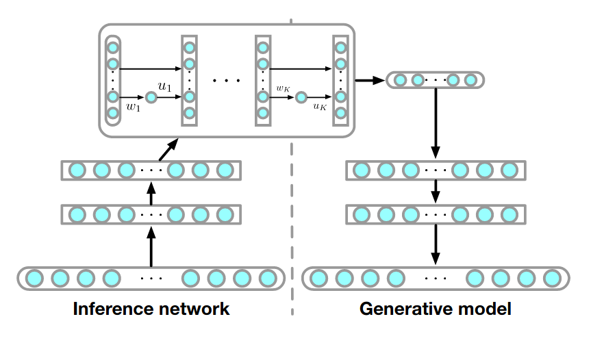

An introduction to Normalizing Flow models
Contents
An introduction to Normalizing Flow models¶
Normalizing flows (NFs) are likelihood-based generative models, similar to VAE. The main difference is that the marginal likelihood \(p(x)\) of VAE is not tractable, hence relying on the ELBO. On the other hand, NF has a tractable marginal likelihood, i.e. we can write a direct expression for \(\max \log p(x)\)
In a nutshell NF is a composition of “simple” transformations (hence the name flow) applied to a “simple” distribution, in order to obtain a more complex distribution. NF have been extensively used to obtain more flexible approximate posteriors in VI, i.e. to go beyond the mean field approximation.
In this lesson we review the fundamental concepts and simple implementations of NF
Change of variables formula¶
Let X and Z be continuous random variables having the same dimensionality and \(f_\theta: \mathbb{R}^D \to \mathbb{R}^D\) a parametric mapping such that \(x = f_\theta(z)\), where \(x\) and \(z\) are samples from \(X\) and \(Z\), respectively.
We will assumme that the mapping is invertible, i.e. \(z=f_\theta^{-1}(x)\)
In this case we have the following relation between the distributions marginal distributions \(p_X(x)\) and \(p_Z(z)\)
where \(|\cdot|\) is the absolute value and \(\text{det}\) is the determinant operator. This is known as the change of variables formula for probability density functions. It comes from the fact that \(\int p_X(x) dx = \int p_Z(z) dz = 1\)
The determinant is only defined for square matrices. The matrix in this case is the jacobian of \(f_\theta\), the matrix of partial derivatives. If the transformation is invertible the jacobian is an invertible matrix, hence \(\text{det}(A^{-1}) = \text{det}(A)^{-1}\)
Planar and Radial flows¶
Several linear and nonlinear invertible transformations have been proposed. In what follows we review some of them starting from the so-called planar flow
where \(\theta = (u, w, b)\) and \(h\) is a smooth element-wise non linear function. This transformations can be interpreted as a contraction/expansion of the distribution in the direction perpendicular to the hyperplane \(\langle w, z \rangle + b\), hence the name planar flow.
A typical non-linear function is \(\tanh\), in this case \(w^T u \geq -1\) is a sufficient condition for the invertibility of the transformation. This constraint is enforced by taking an arbitrary \(u\) and making it parallel to \(w\) using this vector instead (See the appendix here)
In general computing the determinant of a \(D \times D\) has \(\mathcal{O}(D)\) complexity, hence it is convenient to look for transformations where the determinant of the jacobian is easy to compute. For planar flows the jacobian is
which can be computed in \(\mathcal{O}(D)\)
Another family of transformations consider contraction/expansion of the distribution around a reference point \(z_0\), these are the radial flows
where \(\theta=(z_0, \alpha, \beta)\) and \(r = |z-z_0|\). A sufficient condition for invertibility is that \(\frac{r\beta}{\alpha + r}\) is non-decreasing, which can be forced by reparametrization of \(\beta\) as \(\hat \beta = - \alpha + \log(1+e^\beta)\)
Composition of finite flows¶
For three random variables having the same dimensionality and two invertible parametric mappings such that \(z_3 = f_{\theta}(z_2)\) and \(z_2 = g_{\phi}(z_1)\) we can use the change of variables to relate \(z_3 = f_\theta(g_\phi(z_1))\) also written as \(z_3 = f_\theta \odot g_\phi (z_1)\) as
Different transformations can be used but it is more convenient to use one family and change only the parameters. We can generalize this to a finite composition of \(K\) random variables \(z_K = f_{\theta_{K-1}} \odot f_{\theta_{K-2}} \odot \cdots \odot f_{\theta_{2}} \odot f_{\theta_{1}}(z_1)\)
or
This chain of succesive distribution transformations applied to \(p(z_1)\) is the normalizing flow.
A key property of NFs is that for any function \(h(z_K)\) we can compute the expected value
by just applying the transformation and sampling for \(p_1\)
In this lesson we will not review other types of flows, e.g. infinitesimal, Langevin and Hamiltonian flows
The following figure from (Jimenez-Rezende and Mohamed, 2016) shows different finite-length sequences of planar and radial flows applied on simple distributions (gaussian and uniform).

This shows that very complex distributions can be obtined from rather simple ones. Although note each transform tends to work on a very particular region of the space. What if the dimensionality is large? We would require an exponentially large number of transformations. This for example motivates Sylvester flows which propose a more flexible version of planar flow, hence requiring fewer transformations in the composition
List of requirements for an ideal transformation
Efficient evaluation of the inverse and log jacobian determinant (for density estimation)
Analytical expression for the inverse (to draw samples)
Flexible enough so that compositions are not too big
Neural spline flow¶
The neural spline flow proposes a transform based on rational-quadratic splines that is fully-differentiable and has a closed form (analytical) solution for its inverse.
The spline is a curve composed of \(K\) rational-quadratic functions with boundaries defined by a set of \(K+1\) monotonically increasing knots or bins \(\{(x^k, y^k)\}\) starting in (-B, B) and ending in (B, B), where \(B\) is some predefined bound.
{kind=link}
The key is that the width and height of the bins are parameterized by a single layer fully connected neural network with a predefined number of hidden units. The network receives \(x\) and returns a set of parameters related to the bins and derivatives of the knots
Key idea: NF for more flexible posteriors in VI¶
The ELBO is tight when the approximate posterior \(q(z|x)\) matches the true posterior \(p(z|x)\). But this equivalence may not occur if we are restricted to very simple approximate posteriors. NF might give the approximate variational posterior enough flexibility to match the actual posterior.
For example this can be used to add more flexible posteriors in VAE as shown in the following figure from (Jimenez-Rezende and Mohamed, 2016)
{kind=link}
The cost function in this case is
{kind=link}
where the approximate posterior \(q_\phi(z|x)\) is replaced by the flow distribution \(q_K(z_K)\), a planar flow in this case.
The algorithm to train the model is summarized as
{kind=link}
See also
A VAE-flow framework that generalize to abstract conditional flows is described in (Su and Wu, 2018)
In this lesson the big family of autorregresive flows was omitted, I suggest (Huang et al 2018) to review recent advances
A general methodology to build non linear flows: (Dinh et al 2014)
An excellent tutorial by M. Brubaker at ECCV 2020 on NF for images
Awesome NF: https://github.com/janosh/awesome-normalizing-flows